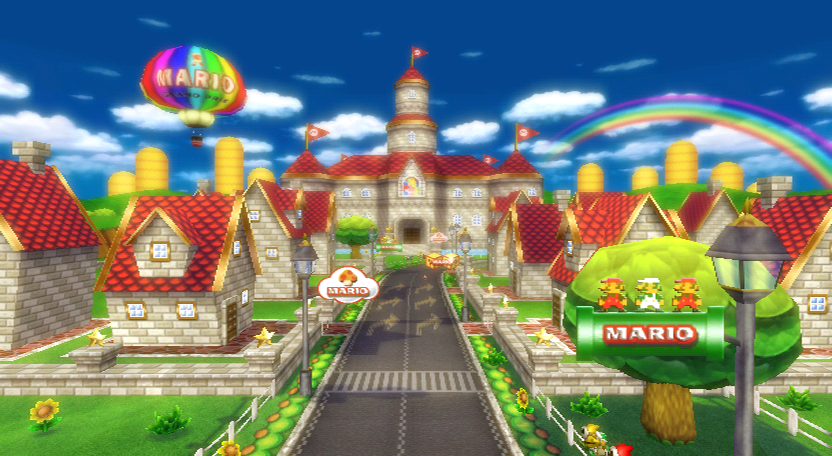

<!DOCTYPE html>
<html lang="en">
<head>
    <meta charset="UTF-8">
    <meta name="viewport" content="width=device-width, initial-scale=1.0">
    <title>Blank Leaflet Map with SVG Overlay</title>
    <!-- Include Leaflet CSS -->
    <link rel="stylesheet" href="https://unpkg.com/leaflet@1.9.4/dist/leaflet.css"
        integrity="sha256-p4NxAoJBhIIN+hmNHrzRCf9tD/miZyoHS5obTRR9BMY="
        crossorigin=""/>
    <!-- Make sure you put this AFTER Leaflet's CSS -->
    <object type="image/svg+xml" data="mapit3.svg" id="svgObject"></object>
    <style>
        @font-face {
            font-family: 'papermario'; /* Name of the font */
            src: url('FOT-PopJoyStd-B.otf'); /* Path to the font file */
            /* You can also include other font formats for better cross-browser compatibility */
        }
        /* Style the map container with a background color */
        #map {
            width: 600px;
            height: 400px;
            background-color: #38afcd; /* Set the desired background color */
        }

        .custom-popup .leaflet-popup-content {
            border-radius: 10px;
            margin: 0 0 0 0;
        }

        .custom-popup .leaflet-popup-content-wrapper {
        background:white;
        border-radius: 10px;
        padding: 0 0 0 0; /*Deleted top and bottom white sides!*/
        width: 300px;
        }

        .custom-popup .leaflet-popup-content-wrapper a {
            color:rgba(255,255,255,0.5);
        }

        .custom-popup .leaflet-container a.leaflet-popup-close-button {
            color:white;
        }

        .image-container {
            overflow: hidden; /* Crop overflow content */
            border-top-left-radius: 10px; /* Rounded top-left corner */
            border-top-right-radius: 10px; /* Rounded top-right corner */
            margin: 0;
            position: relative;
            width: 300px; /* Adjust width as needed */
            height: auto;
        }

        /* Overlay for the fade effect */
        .fade-overlay {
            position: absolute;
            bottom: 0;
            left: 0;
            width: 100%;
            height: 50%; /* Adjust height for the fade effect */
            background-image: linear-gradient(to bottom, rgba(255, 255, 255, 0), rgba(255, 255, 255, 1)); /* Fade from transparent to opaque white */
        }

        /* Define styles for the image within the container */
        .image-container img {
            width: 100%;
            height: auto;
        }

        .text-container {
            margin: 5px 5px 5px 5px;
            top: -50px;
            bottom:5px;
        }

        .title-text {
            font-size: 15px;
            font-family: 'papermario';
            bottom: -5px;
        }

        .info-text {
            font-size: 13px;
            font-family: 'papermario';
        }

    </style>
</head>
<body>
    <!-- Create a div element with an id for the map to be rendered into -->
    <div class='custom-popup' id="map" style="width: 1440px; height: 810px;"></div>

    <!-- Include Leaflet JavaScript -->
    <script src="https://unpkg.com/leaflet@1.9.4/dist/leaflet.js"
        integrity="sha256-20nQCchB9co0qIjJZRGuk2/Z9VM+kNiyxNV1lvTlZBo="
        crossorigin=""></script>

    <script src="https://unpkg.com/leaflet-minimap/dist/Control.MiniMap.min.js"></script>
    <script src="https://unpkg.com/leaflet-virtual-grid@1.0.7/dist/virtual-grid.js"></script>

    <script>
        // Initialize the map
        var map = L.map('map', {
            zoomDelta: 0.5,
            renderer: L.svg(),
            doubleClickZoom: false
        }).setView([0, 0], 5); // Set initial view (lat, lng), zoom level

        // Create an SVG element
        var svgElementBounds = [[-720, -480], [720, 480]]; // Set bounds as [[lat1, lng1], [lat2, lng2]] or [[y1, x1], [y2, x2]]
        var svgObject = document.getElementById('svgObject');
        // Add the SVG overlay to the map
        L.svgOverlay(svgObject, svgElementBounds).addTo(map);

        map.setMaxBounds([
            [-720, -480],
            [720, 480]
        ]);

        map.setMaxZoom(10); // Set maximum zoom level to 15
        map.setMinZoom(2); // Set minimum zoom level to 5

        var redIcon = L.icon({
            iconUrl: 'icon.svg', // URL of the icon image
            shadowUrl: 'marker-shadow.svg',
            iconSize: [38, 95], // Size of the icon
            shadowSize:   [50, 64], // size of the shadow
            iconAnchor: [20, 94], // Anchor point of the icon (tip of the marker)
            shadowAnchor: [17, 72],
            popupAnchor: [-1.5, -85] // Popup anchor relative to the icon
        });

        marker = L.marker([0, 0], {icon: redIcon}).addTo(map)
        
        var popupContent = `
            <div class="popup-container">
                <div class="image-container">
                    
                    <div class="fade-overlay"></div>
                </div>
                <div class="text-container">
                    <div class="title-text">Greater Castle Town</div>
                    <div class="info-text">
                        From: Mario Kart Wii, Mario Circuit <br> <br>
                        This is the cute castle town which you race around in front of Peach's castle. 
                    </div> 
                </div>
            </div>
        `;

        var customOptions =
        {
        'className' : 'popupCustom'
        }
        marker.bindPopup(popupContent, customOptions);

        


        var minimap = new L.Control.MiniMap(
            L.tileLayer('mapit2.png'), // Pass the tile layer to be used in the minimap
            { 
                toggleDisplay: true, 
                width:150, 
                height:225, 
                bounds: map.getBounds() 
            }// Add an option to toggle the minimap display
        );

        // Add the minimap to the main map
        //minimap.addTo(map);

    </script>
</body>
</html>
